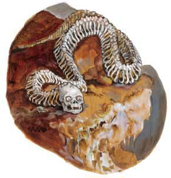

中型构装生物

| 生命骰： | 2d10+20 (30 hp) |
| 先攻： | +3 |
| 速度： | 30 英尺，攀爬 10 英尺 |
| 防御等级： | 18 (+3 敏捷，+5 天生)，接触 13，措手不及 15 |
| 基本攻击／擒抱： | +1/+2 |
| 攻击： | 啮咬 +2 近战 |
| 全力攻击： | 啮咬 +2 近战 |
| 伤害： | 啮咬 1d6+1 附加麻痹 |
| 面宽／触及： | 5 英尺/5 英尺 |
| 特殊攻击： | 死亡之舞，麻痹，偷袭 |
| 特殊能力： | 构装生物特性 |
| 豁免： | 强韧 +0，反射 +3，意志 +0 |
| 属性： | 力量 13，敏捷 16，体质 ―，智力 ―，感知 11，魅力 12 |
| 技能： | 攀爬 +9，躲藏 +11，潜行 +11 |
| 专长： | ― |
| 地域： | 任意陆地和地下 |
| 组织： | 单独或帮 (2�C5) |
| 挑战等级： | 2 |
| 宝物： | ― |
| 阵营： | 总是绝对中立 |
| 进化： | 3�C5 HD (中型)；6 HD (大型) |
死灵蝮蛇是一种隐秘的构装生物，常被误认为是不死生物。它被创造出来用于刺杀目标或守卫某件物品或地点。
死灵蝮蛇看起来像一条骸骨蛇，长着带尖牙的类人头骨。除非命令要求它跟随某个生物或在某个区域巡逻，否则它通常会保持隐藏并绝对静止。它滑行时寂静无声且爬行能力出色。它理解通用语并服从其创造者的命令，但无法说话。
该生物通常的攻击方式是先藏匿，然后悄悄接近并对毫无戒备的目标发动偷袭。如果面对多个敌人或一个意识到它存在的生物，它会使用其死亡之舞能力来使自己能够接近敌人并进行啮咬。
死亡之舞 (Dance of Death) (Su)：死灵蝮蛇可以以催眠般的方式摆动身体，吸引住 30 英尺内能看见它的任何生物的注意力。未能通过意志豁免（DC 12）的生物将在死灵蝮蛇持续其舞蹈期间处于恍惚状态（无法采取动作但能自卫）。通过豁免的生物可以移开视线不看死灵蝮蛇，如同避开凝视攻击（每轮有 50% 的几率无需进行豁免检定，攻击死灵蝮蛇时有 20% 失手率）。即使正在施展死亡之舞，死灵蝮蛇也能以一个移动动作移动至多其正常速度的距离。这是一个影响心灵的效果。
麻痹 (Paralysis) (Su)：被死灵蝮蛇啮咬的生物必须成功通过一次意志豁免（DC 12），否则麻痹且失去意识 10 分钟。
偷袭 (Sneak Attack) (Ex)：当死灵蝮蛇的目标失去敏捷加值，或者目标被死灵蝮蛇夹击时，死灵蝮蛇在成功的近战攻击中造成额外 2d6 点伤害。
构装生物特性 (Construct Traits)：死灵蝮蛇免疫影响心灵效果、毒素、睡眠、麻痹、震慑、疾病、即死效果、死灵效果以及任何需要强韧豁免的效果，除非该效果同样对物体生效。该生物不会受到重击、非致命伤害、属性伤害、属性吸取、能量吸取或是巨创即死的影响。它无法自我治疗，但可通过修复进行治疗。它无法被复生或复活。死灵蝮蛇拥有黑暗视觉（60 英尺范围）。
技能：死灵蝮蛇在躲藏和潜行检定上有+8种族加值。它在攀爬检定上也有+8种族加值，并且即使在匆忙或受威胁时也能始终选择在攀爬检定上取 10。
创建 (CONSTRUCTION) 要创建一个死灵蝮蛇，创造者需要制造奇物（Craft Wondrous Item）专长，并且必须消耗 5,000 gp 的原料和 100 XP。成本包括需要一具中型蛇类生物的骨架、一个类人生物的头骨以及所有其他普通材料。组装身体需要一个成功的工艺（雕塑）检定（DC 13）。如果创造者是术士或法师，创建过程需要指使术（geas/quest），人类定身术（hold person），催眠术（hypnotism）以及魔邓肯忠犬（Mordenkainen's faithful hound）。如果创造者是牧师，则需要活化物体（animate objects），命令术（command），指使术（geas/quest）以及人类定身术（hold person）。该过程需五天时间。
可以创造这种生物更大的范本，每增加一个生命骰会使成本增加 2,500 gp 和 50 XP。
升级手册升级后的创建要求 死灵蝮蛇Necrophidius：施法者等级：12级；先决条件：制造构装生物，以及指示术，人类定身术，催眠术，魔邓肯的忠犬（如果是奥术施法者）或活化物品，命令术，指示术，人类定身术（如果是牧师）；市场价格：3,000金币；创建成本：2,000金币 + 100经验值。